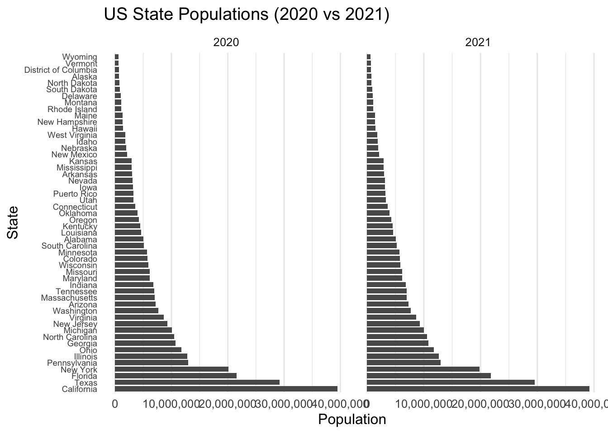
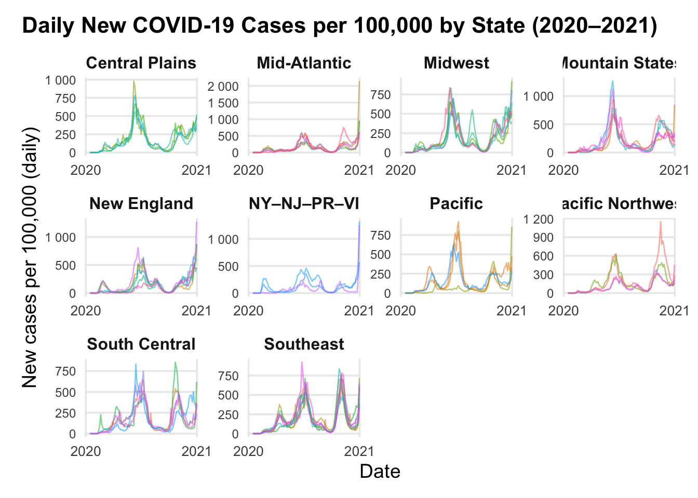
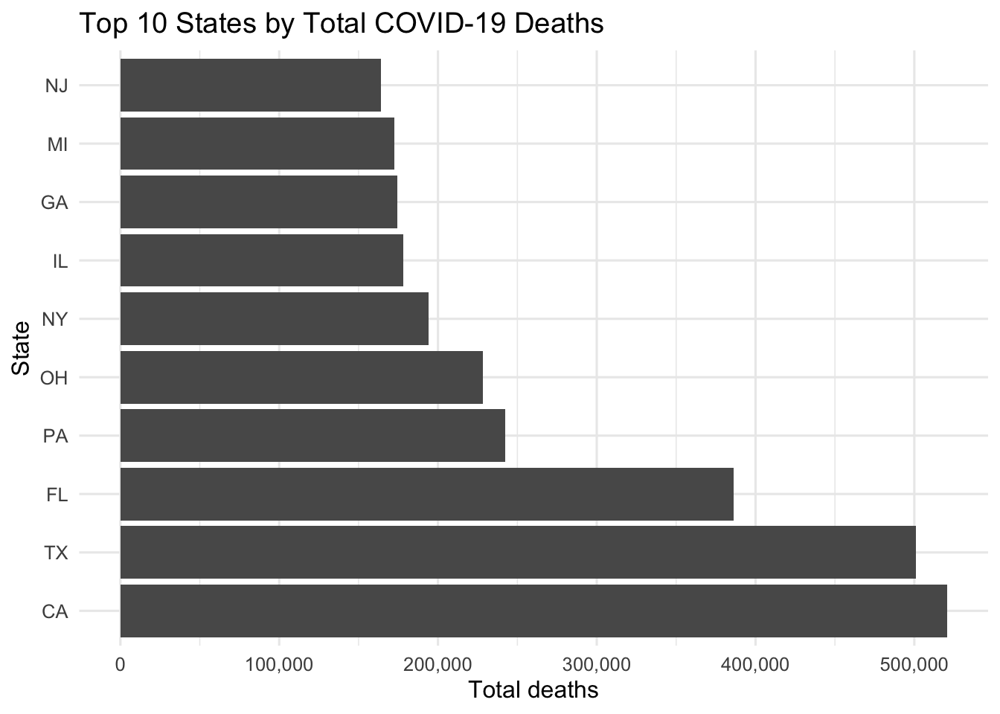

## Your code here
source("census-key.R")Problem set 4
In the next problem set, we plan to explore the relationship between COVID-19 death rates and vaccination rates across US states by visually examining their correlation. This analysis will involve gathering COVID-19 related data from the CDC’s API and then extensively processing it to merge the various datasets. Since the population sizes of states vary significantly, we will focus on comparing rates rather than absolute numbers. To facilitate this, we will also source population data from the US Census to accurately calculate these rates.
In this problem set we will learn how to extract and wrangle data from the data US Census and CDC APIs.
- Get an API key from the US Census at https://api.census.gov/data/key_signup.html. You can’t share this public key. But your code has to run on a TFs computer. Assume the TF will have a file in their working directory named
census-key.Rwith the following one line of code:
census_key <- "d9d14b64c306b52a2b823c5e0edb43db0e4b0e9b"Write a first line of code for your problem set that defines census_key by running the code in the file census-key.R.
- The US Census API User Guide provides details on how to leverage this valuable resource. We are interested in vintage population estimates for years 2021 and 2022. From the documentation we find that the endpoint is:
url <- "https://api.census.gov/data/2021/pep/population"Use the httr2 package to construct the following GET request.
https://api.census.gov/data/2021/pep/population?get=POP_2020,POP_2021,NAME&for=state:*&key=YOURKEYHERECreate an object called request of class httr2_request with this URL as an endpoint. Hint: Print out request to check that the URL matches what we want.
library(httr2)
#request <-
request <- request(url) |>
req_url_query(
get = "POP_2020,POP_2021,NAME",
"for" = "state:*",
key = census_key
)
resp <- req_perform(request)
arr <- resp_body_json(resp)
mat <- do.call(rbind, arr)
df <- as.data.frame(mat[-1, ], stringsAsFactors = FALSE)
names(df) <- mat[1, ]
df <- type.convert(df, as.is = TRUE)
df$state <- sprintf("%02d", as.integer(df$state))
df <- as.data.frame(lapply(df, unlist), stringsAsFactors = FALSE)
df <- type.convert(df, as.is = TRUE)
df$state <- sprintf("%02d", as.integer(df$state))
head(df) POP_2020 POP_2021 NAME state
1 3962031 3986639 Oklahoma 40
2 1961455 1963692 Nebraska 31
3 1451911 1441553 Hawaii 15
4 887099 895376 South Dakota 46
5 6920119 6975218 Tennessee 47
6 3114071 3143991 Nevada 32str(df)'data.frame': 52 obs. of 4 variables:
$ POP_2020: int 3962031 1961455 1451911 887099 6920119 3114071 2117566 3188669 2935880 690093 ...
$ POP_2021: int 3986639 1963692 1441553 895376 6975218 3143991 2115877 3193079 2934582 670050 ...
$ NAME : chr "Oklahoma" "Nebraska" "Hawaii" "South Dakota" ...
$ state : chr "40" "31" "15" "46" ...- Make a request to the US Census API using the
requestobject. Save the response to and object namedresponse. Check the response status of your request and make sure it was successful. You can learn about status codes here.
#response <-
response <- req_perform(request)
resp_status(response) [1] 200resp_content_type(response) [1] "application/json"- Use a function from the httr2 package to determine the content type of your response.
# Your code here
resp_content_type(response)[1] "application/json"- Use just one line of code and one function to extract the data into a matrix. Hints: 1) Use the
resp_body_jsonfunction. 2) The first row of the matrix will be the variable names and this OK as we will fix in the next exercise.
#population <-
population <- do.call(rbind, resp_body_json(response))- Examine the
populationmatrix you just created. Notice that 1) it is not tidy, 2) the column types are not what we want, and 3) the first row is a header. Convertpopulationto a tidy dataset. Remove the state ID column and change the name of the column with state names tostate_name. Add a column with state abbreviations calledstate. Make sure you assign the abbreviations for DC and PR correctly. Hint: Use the janitor package to make the first row the header.
library(tidyverse)
library(janitor)
#population <- population |> ## Use janitor row to names function
# convert to tibble
# remove stat column
# rename state column to state_name
# use pivot_longer to tidy
# remove POP_ from year
# parese all relevant colunns to numeric
# add state abbreviations using state.abb variable
# use case_when to add abbreviations for DC and PR
#| message: false
#| warning: false
population <- do.call(rbind, resp_body_json(response))
colnames(population) <- population[1, ]
population <- population[-1, , drop = FALSE]
df <- as_tibble(as.data.frame(population, stringsAsFactors = FALSE))
names(df) <- trimws(names(df))
df <- df %>%
select(-any_of("state")) %>%
rename(state_name = NAME)
population <- df %>%
pivot_longer(
cols = starts_with("POP_"),
names_to = "year",
values_to = "population"
) %>%
mutate(
year = as.integer(gsub("\\D", "", year)),
population = as.numeric(population),
state_name = as.character(state_name),
state = case_when(
state_name %in% state.name ~ state.abb[match(state_name, state.name)],
state_name == "District of Columbia" ~ "DC",
state_name == "Puerto Rico" ~ "PR",
TRUE ~ NA_character_
)
) %>%
relocate(state, .after = state_name)
glimpse(population)Rows: 104
Columns: 4
$ state_name <chr> "Oklahoma", "Oklahoma", "Nebraska", "Nebraska", "Hawaii", "…
$ state <chr> "OK", "OK", "NE", "NE", "HI", "HI", "SD", "SD", "TN", "TN",…
$ year <int> 2020, 2021, 2020, 2021, 2020, 2021, 2020, 2021, 2020, 2021,…
$ population <dbl> 3962031, 3986639, 1961455, 1963692, 1451911, 1441553, 88709…count(population, year)# A tibble: 2 × 2
year n
<int> <int>
1 2020 52
2 2021 52- As a check, make a barplot of states’ 2020 and 2021 populations. Show the state names in the y-axis ordered by population size. Hint: You will need to use
reorderand usefacet_wrap.
# population |>
# reorder state
# assign aesthetic mapping
# use geom_col to plot barplot
# flip coordinates
# facet by year
library(dplyr)
library(ggplot2)
library(forcats)
library(scales)
Attaching package: 'scales'The following object is masked from 'package:purrr':
discardThe following object is masked from 'package:readr':
col_factorpopulation %>%
#filter(year %in% c(2020, 2021)) %>%
#group_by(year) %>%
mutate(state_name = fct_reorder(state_name, population, .desc = TRUE)) %>%
ungroup() %>%
ggplot(aes(x = population, y = state_name)) +
geom_col(width = 0.8) +
facet_wrap(~ year, scales = "free_x") +
scale_x_continuous(labels = label_comma()) +
labs(
title = "US State Populations (2020 vs 2021)",
x = "Population",
y = "State"
)+
theme_minimal(base_size = 12) +
theme(
axis.text.y = element_text(size = 7),
panel.grid.major.y = element_blank()
)
- The following URL:
url <- "https://github.com/datasciencelabs/2025/raw/refs/heads/main/data/regions.json"points to a JSON file that lists the states in the 10 Public Health Service (PHS) defined by CDC. We want to add these regions to the population dataset. To facilitate this create a data frame called regions that has two columns state_name, region, region_name. One of the regions has a long name. Change it to something shorter.
library(jsonlite)
library(purrr)
url <- "https://github.com/datasciencelabs/2025/raw/refs/heads/main/data/regions.json"
# regions <- use jsonlit JSON parser
# regions <- convert list to data frame. You can use map_df in purrr package
#| message: false
#| warning: false
library(tibble)
library(dplyr)
library(stringr)
regions_raw <- fromJSON(url)
regions <- fromJSON(url) %>%
as_tibble() %>%
unnest_longer(states) %>%
rename(state_name = states) %>%
transmute(
state_name = as.character(state_name),
region = as.integer(region),
region_name = as.character(region_name)
) %>%
mutate(
region_name = dplyr::recode(
region_name,
"New York and New Jersey, Puerto Rico, Virgin Islands" = "NY–NJ–PR–VI"
)
) %>%
filter(state_name %in% c(state.name, "District of Columbia", "Puerto Rico")) %>%
distinct()
glimpse(regions)Rows: 52
Columns: 3
$ state_name <chr> "Connecticut", "Maine", "Massachusetts", "New Hampshire", …
$ region <int> 1, 1, 1, 1, 1, 1, 2, 2, 2, 3, 3, 3, 3, 3, 3, 4, 4, 4, 4, 4…
$ region_name <chr> "New England", "New England", "New England", "New England"…head(regions)# A tibble: 6 × 3
state_name region region_name
<chr> <int> <chr>
1 Connecticut 1 New England
2 Maine 1 New England
3 Massachusetts 1 New England
4 New Hampshire 1 New England
5 Rhode Island 1 New England
6 Vermont 1 New England- Add a region and region name columns to the
populationdata frame.
# population <-
population <- population %>%
select(-any_of(c("region", "region_name"))) %>%
left_join(regions, by = "state_name") %>%
relocate(region, region_name, .after = state)- From reading https://data.cdc.gov/ we learn the endpoint
https://data.cdc.gov/resource/pwn4-m3yp.jsonprovides state level data from SARS-COV2 cases. Use the httr2 tools you have learned to download this into a data frame. Is all the data there? If not, comment on why.
api <- "https://data.cdc.gov/resource/pwn4-m3yp.json"
# cases_raw <-
cases_raw <- request(api) |>
req_perform() |>
resp_body_json(simplifyVector = TRUE) |>
as_tibble()
nrow(cases_raw) [1] 1000No. We see exactly 1,000 rows because the default upper limit for JSON requests on the Socrata API (data.cdc.gov) is 1,000 rows.
We see exactly 1,000 rows. We should be seeing over \(52 \times 3\) rows per state.
- The reason you see exactly 1,000 rows is because CDC has a default limit. You can change this limit by adding
$limit=10000000000to the request. Rewrite the previous request to ensure that you receive all the data. Then wrangle the resulting data frame to produce a data frame with columnsstate,date(should be the end date) andcases. Make sure the cases are numeric and the dates are inDateISO-8601 format.
api <- "https://data.cdc.gov/resource/pwn4-m3yp.json"
# cases_raw <-
cases_raw <- request(api) |>
req_url_query("$limit" = "10000000000") |>
req_perform() |>
resp_body_json(simplifyVector = TRUE) |>
as_tibble()
nm <- names(cases_raw)
state_col <- nm[grepl("(?i)^state$", nm) | grepl("(?i)jurisdiction|location", nm)][1]
date_col <- nm[grepl("(?i)^end_date$", nm) | grepl("(?i)^date$", nm) |
grepl("(?i)submission_date|report_date|as_of_date", nm)][1]
cum_col <- nm[grepl("(?i)^cases$", nm) | grepl("(?i)tot|total|cum", nm) &
grepl("(?i)case", nm)][1]
stopifnot(!is.na(state_col), !is.na(date_col), !is.na(cum_col))
cases <- cases_raw |>
transmute(
state = .data[[state_col]],
date = as.Date(substr(as.character(.data[[date_col]]), 1, 10)),
cum = suppressWarnings(as.numeric(.data[[cum_col]]))
) |>
filter(!is.na(state), !is.na(date), !is.na(cum)) |>
arrange(state, date) |>
group_by(state) |>
mutate(cases = pmax(0, cum - dplyr::lag(cum))) |>
ungroup() |>
drop_na(cases) |>
select(state, date, cases)
summary(cases) state date cases
Length:10320 Min. :2020-01-29 Min. : 0.0
Class :character 1st Qu.:2020-11-23 1st Qu.: 701.8
Mode :character Median :2021-09-18 Median : 3149.5
Mean :2021-09-18 Mean : 10147.5
3rd Qu.:2022-07-14 3rd Qu.: 10021.0
Max. :2023-05-10 Max. :790954.0 - For 2020 and 2021, make a time series plot of cases per 100,000 versus time for each state. Stratify the plot by region name. Make sure to label you graph appropriately.
#cases |>
library(dplyr)
library(ggplot2)
library(lubridate)
library(scales)
library(ggh4x)
pop_den <- population %>%
filter(year %in% c(2020, 2021)) %>%
select(state, year, population, region_name)
cases_rate <- cases %>%
filter(date >= as.Date("2020-01-01"),
date <= as.Date("2021-12-31")) %>%
mutate(year = year(date)) %>%
inner_join(pop_den, by = c("state", "year")) %>%
mutate(cases_per_100k = (cases / population) * 1e5)
x_limits <- as.Date(c("2020-01-01", "2021-12-31"))
x_breaks <- as.Date(c("2020-01-01", "2021-12-31"))
x_labels <- c("2020", "2021")
ggplot(cases_rate, aes(x = date, y = cases_per_100k, group = state, color = state)) +
geom_line(alpha = 0.55, linewidth = 0.45, show.legend = FALSE) +
ggh4x::facet_wrap2(~ region_name, scales = "free_y", axes = "x") +
scale_x_date(
limits = x_limits,
breaks = x_breaks,
labels = x_labels,
expand = expansion(mult = c(0, 0), add = c(7, 7))
) +
scale_y_continuous(labels = scales::label_number(accuracy = 1)) +
labs(
title = "Daily New COVID-19 Cases per 100,000 by State (2020–2021)",
x = "Date",
y = "New cases per 100,000 (daily)"
) +
theme_minimal(base_size = 14) +
theme(
plot.title.position = "plot",
plot.title = element_text(face = "bold", size = 16),
plot.subtitle= element_text(size = 12),
strip.text = element_text(size = 12, face = "bold"),
axis.text.x = element_text(size = 10),
axis.text.y = element_text(size = 9),
panel.grid.minor = element_blank(),
plot.margin = margin(12, 16, 12, 16)
)
- The dates in the
casesdataset are stored as character strings. Use the lubridate package to properly parse thedatecolumn, then create a summary table showing the total COVID-19 cases by month and year for 2020 and 2021. The table should have columns for year, month (as month name), and total cases across all states. Order by year and month. Use the knitr package andkable()function to display the results as a formatted table.
#cases |>
library(lubridate)
library(knitr)
cases |>
mutate(date = ymd(as.character(date))) |>
filter(year(date) %in% c(2020, 2021)) |>
mutate(year = year(date), month = month(date, label = TRUE, abbr = FALSE)) |>
group_by(state, year, month) |>
summarise(cases = max(cases, na.rm = TRUE), .groups = "drop") |>
group_by(year, month) |>
summarise(total_cases = sum(cases, na.rm = TRUE), .groups = "drop") |>
arrange(year, month) |>
kable(col.names = c("Year", "Month", "Total cases"))| Year | Month | Total cases |
|---|---|---|
| 2020 | January | 5 |
| 2020 | February | 31 |
| 2020 | March | 59286 |
| 2020 | April | 264152 |
| 2020 | May | 201134 |
| 2020 | June | 240225 |
| 2020 | July | 492568 |
| 2020 | August | 460021 |
| 2020 | September | 348358 |
| 2020 | October | 529951 |
| 2020 | November | 1308806 |
| 2020 | December | 1740293 |
| 2021 | January | 1742291 |
| 2021 | February | 918593 |
| 2021 | March | 538067 |
| 2021 | April | 515776 |
| 2021 | May | 342121 |
| 2021 | June | 133954 |
| 2021 | July | 499015 |
| 2021 | August | 1093054 |
| 2021 | September | 1290827 |
| 2021 | October | 716241 |
| 2021 | November | 698317 |
| 2021 | December | 2166760 |
- The following URL provides additional COVID-19 data from the CDC in JSON format:
deaths_url <- "https://data.cdc.gov/resource/9bhg-hcku.json"Use httr2 to download COVID-19 death data from this endpoint. Make sure to remove the default limit to get all available data. Create a clean dataset called deaths with columns state, date, and deaths (renamed from the original column name). Ensure dates are in proper Date format and deaths are numeric.
# Your code here
library(httr2)
library(dplyr)
library(tibble)
library(lubridate)
raw <- request(deaths_url) |>
req_url_query("$limit" = "10000000000") |>
req_perform() |>
resp_body_json(simplifyVector = TRUE) |>
as_tibble()
date_col <- intersect(c("end_date","date","as_of_date","submission_date","data_as_of"), names(raw))[1]
death_col <- intersect(c("covid_19_deaths","deaths","total_deaths","death_count"), names(raw))[1]
deaths <- raw |>
transmute(
state = .data[["state"]],
date = as.Date(substr(as.character(.data[[date_col]]), 1, 10)),
deaths = as.numeric(.data[[death_col]])
) |>
filter(state != "United States", !is.na(date), !is.na(deaths)) |>
mutate(
state = case_when(
state %in% state.abb ~ state,
state %in% state.name ~ state.abb[match(state, state.name)],
state == "District of Columbia" ~ "DC",
state == "Puerto Rico" ~ "PR",
TRUE ~ state
)
) |>
arrange(state, date)- Using the
deathsdataset you created, make a bar plot showing the total COVID-19 deaths by state. Show only the top 10 states with the highest death counts. Order the bars from highest to lowest and use appropriate labels and title.
# Your code here
library(dplyr)
library(ggplot2)
library(scales)
library(forcats)
valid_states <- c(state.abb, "DC", "PR")
deaths_top10 <- deaths %>%
filter(state %in% valid_states) %>%
group_by(state, date) %>%
summarise(deaths = sum(deaths, na.rm = TRUE), .groups = "drop") %>%
group_by(state) %>%
summarise(total_deaths = max(deaths, na.rm = TRUE), .groups = "drop") %>%
slice_max(total_deaths, n = 10) %>%
arrange(desc(total_deaths))
ggplot(deaths_top10,
aes(x = fct_reorder(state, total_deaths, .desc = TRUE),
y = total_deaths)) +
geom_col() +
coord_flip() +
scale_y_continuous(labels = label_comma()) +
labs(
title = "Top 10 States by Total COVID-19 Deaths",
x = "State",
y = "Total deaths"
) +
theme_minimal(base_size = 12)